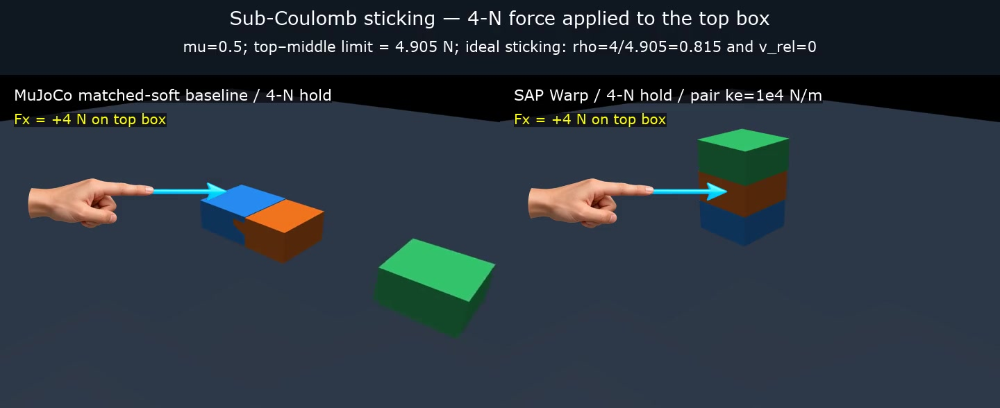

Protocol report · October 2026
Mechanism-aware
evaluation
Each completed task is reported as a complete evidence chain: physical setup, literal-default B=1 versus frozen B=5, then the bounded transfer evidence for that chosen setting.
1. How to read a task card
A card reports the literal compiled/default B=1 and the frozen B=5 selection for SAP Warp and MuJoCo Warp. “Accuracy” is shown only for tasks with preregistered discrete outcomes; bounce and toss instead report their continuous fidelity measure. The final subsection is not a tuning footnote: it states what the selected setting did, or did not, transfer to.
2. Result inventory
| Task | SAP Warp | MuJoCo Warp | Website status |
|---|---|---|---|
| Three-box push | complete | complete | full card |
| Simple pinch | complete | complete | full card |
| Three-plate stack | complete-negative transfer | complete-negative transfer | full card |
| GAUGE ball bounce | complete | complete | full card |
| ContactNets cube toss | complete | complete | full card |
| Round socket | complete-negative transfer | complete-negative transfer | full card |
| GAUGE slope · MIT Push · cube-toss tail | telemetry audit pending | telemetry audit pending | not yet publishable |
| Pendulum · Newton cradle · Cassie · peg/EZGripper | incomplete or not comparable | incomplete or not comparable | not yet publishable |
3. Static friction
These tasks test whether contact models preserve or release a body at the expected frictional threshold. Primary evidence is discrete retain/release agreement plus a mechanism metric such as creep or preload.
3.1 Three-box push
1. Task setup
Three 1-kg boxes are stacked vertically. A horizontal load is applied to the middle or top box. The analytic breakaway loads are 9.81 N (middle interface) and 4.905 N (top interface). The primary grid has 14 force/target conditions with R=20 perturbations each (280 labelled rollouts): sub-threshold cases should retain and super-threshold cases should slip.

2. B=1 → B=5 core evidence
| Engine | B=1: setting and accuracy | B=5: setting, change, and accuracy | Mechanism metric and failure |
|---|---|---|---|
| SAP Warp | literal native contact default; 120/280 agreement = 42.9% | ke=1e5, tau=3 ms; 260/280 = 92.9% | Top-box 4 N is the only B=5 error: 20/20 false slips, although 4 N is below the 4.905-N breakaway threshold. |
| MuJoCo Warp | impratio=1, solreffriction_tc=0, noslip=0; 180/280 = 64.3% | impratio=10, solreffriction_tc=4 ms, noslip=2; 280/280 = 100% | Tail creep falls from 89,210 to 0.717 µm/s. B=1 errors are false slips; B=5 has none on the primary grid. |
3. Generalizability and mechanism-aware usability
| Engine | Candidate-usability evidence | Frozen B=5 coverage and outcome | Status |
|---|---|---|---|
| SAP Warp | Native B=1 fails; the selected ke=1e5, tau=3 ms candidate is the best audited B=5 setting. | 14 primary conditions × R=20; 92.9%, with the 4-N top-box threshold case as worst condition. | bounded usability; threshold limitation explicit |
| MuJoCo Warp | Only candidates with noslip=2 pass the primary retention regime; selected B=5 is impratio=10, tc=4 ms. | 14 primary conditions × R=20; 100% agreement and 0.717 µm/s tail creep. | robust on this primary grid |
3.2 Simple pinch
1. Task setup
Two opposed pads close on a block, establish preload, and lift it 60 mm. SAP evaluates five masses (0.15–0.40 kg), R=20 per mass. The relevant mechanism is whether normal preload creates enough friction to retain the block during lift.
2. B=1 → B=5 core evidence
| Engine | B=1: setting and outcome | B=5: setting, change, and outcome | Mechanism metric and failure |
|---|---|---|---|
| SAP Warp | literal default, 0.2-mm compression; 0/100 retain | ke=1e5, tau=3 ms, same 0.2-mm command; 80/100 retain | Preload increases 0.12 → 3.636 N/side. The 0.40-kg condition is 0/20 retained; its friction ratio falls to 0.741. |
| MuJoCo Warp | literal default: tc=4 ms, impratio=1, noslip=0; 340/340 expected-release labels, not discriminative: no expected-retain class | tc=1 ms, impratio=50, noslip=0; 340/340 agreement on the discriminative retain/release grid | No NoSlip correction is used. The key change is solver/contact response, not a post-contact stick correction. |
3. Generalizability and mechanism-aware usability
| Engine | Candidate-usability evidence | Frozen B=5 coverage and outcome | Status |
|---|---|---|---|
| SAP Warp | B=1 cannot sustain any mass; selected B=5 establishes usable preload. | Five masses × R=20: 20/20 at 0.15, 0.20, 0.25, 0.30 kg; 0/20 at 0.40 kg. | bounded robustness through 0.30 kg |
| MuJoCo Warp | Selected B=5 modifies tc/impratio with noslip=0. | 340 labelled grid cases: 340/340 agreement; B=1's one-class release result is not a robustness claim. | robust on audited label grid |
4. Sustained contact
This category probes long-lived support contacts: numerical overlap, load closure, settling, and whether a calibration setting survives thickness and timestep changes.
4.1 Three-plate stack
1. Task setup
Three plates settle under gravity on a support. At the 4-mm calibration stack, the task requires ordered settling, bounded overlap, correct interface normal load, and continuous contact. The frozen transfer grid changes plate thickness and timestep.
2. B=1 → B=5 core evidence
| Engine | B=1: setting and accuracy | B=5: setting, change, and accuracy | Mechanism metric and failure |
|---|---|---|---|
| SAP Warp | literal native default; 0/20 calibration passes | ke=1e6, tau=3 ms; 20/20 calibration passes | Maximum overlap 2.243 → 0.0065 mm; normal-load error 84.5% → 0.10%. Strict transfer fails at 0.25- and 1-ms dt variants. |
| MuJoCo Warp | literal native solver default; 0/20 calibration passes | timeconst=8 ms, dampratio=2, dmax=.99; 11/20 calibration passes | Even the selected calibration candidate is not fully reliable; held-out thickness/dt success ranges 0–80%. |
3. Generalizability and mechanism-aware usability
| Engine | Candidate-usability evidence | Frozen B=5 coverage and outcome | Status |
|---|---|---|---|
| SAP Warp | Selected ke=1e6, tau=3 ms repairs the 4-mm calibration stack. | Thickness/dt transfer has contact duty 1.0 without truncation, but strict force/settling gate fails at reported 0.25- and 1-ms dt settings. | complete-negative robustness |
| MuJoCo Warp | Selected tc=8 ms, dr=2, dmax=.99 reaches 11/20, not a full calibration pass rate. | Frozen thickness/dt grid: success range 0–80%. | complete-negative robustness |
5. Dynamic impact
Impact tasks report event and trajectory fidelity rather than forcing a binary accuracy: valid rebound/apex recovery for bounce, and held-out trajectory error for toss.
5.1 GAUGE ball bounce
1. Task setup
A released GAUGE object impacts a board. After separation, the rebound apex is compared with the reference trajectory. This is a continuous fidelity task: there is no preregistered binary accuracy; the primary measures are valid-apex recovery and held-out apex loss.
2. B=1 → B=5 core evidence
| Engine | B=1: setting and fidelity | B=5: setting, change, and fidelity | Mechanism metric and failure |
|---|---|---|---|
| SAP Warp | literal native default (ke/tau unset); no binary accuracy defined, no valid apex loss | ke=1e4, tau=1 ms; finite held-out apex loss 0.170 | B=1's dominant failure is absence of a valid rebound apex, not “zero restitution”. B=5 is finite and untruncated. |
| MuJoCo Warp | literal Euler default; no binary accuracy defined, no valid apex loss | k=30000, b=30, implicitfast; finite held-out apex loss 0.089 | B=1 fails event validity. B=5 has finite metrics and no overflow worlds. |
3. Generalizability and mechanism-aware usability
| Engine | Candidate-usability evidence | Frozen B=5 coverage and outcome | Status |
|---|---|---|---|
| SAP Warp | Native default cannot supply the apex metric; selected ke=1e4, tau=1 ms does. | Frozen held-out split produces finite, untruncated apex metrics; aggregate loss 0.170. | bounded held-out fidelity |
| MuJoCo Warp | Selected k=30000, b=30, implicitfast recovers valid apex evaluation. | Frozen held-out split: loss 0.089, zero overflow worlds. | bounded held-out fidelity |
5.2 ContactNets cube toss
1. Task setup
Released cube states are replayed into an impact trajectory and compared with held-out reference trajectories. This is also continuous: the primary outcome is trajectory fidelity rather than a binary accuracy. SAP's audited held-out set contains 32 samples with R=20.
2. B=1 → B=5 core evidence
| Engine | B=1: setting and fidelity | B=5: setting, change, and fidelity | Mechanism metric and failure |
|---|---|---|---|
| SAP Warp | literal native default; no binary accuracy defined, selection loss 0.1147 | ke=1e4, tau=0; selection loss improves to 0.1052, frozen held-out loss 0.1193 | Held-out position RMSE 39.9 mm; final orientation error 1.59 rad; finite with no truncation. |
| MuJoCo Warp | literal Euler default; no binary accuracy defined, held-out loss 0.1227 | B=5 selects the same literal default — no parameter changes; held-out loss remains 0.1227 | The important usability result is negative: extra candidates did not improve selection, so B=1 is frozen rather than claiming a tuning gain. |
3. Generalizability and mechanism-aware usability
| Engine | Candidate-usability evidence | Frozen B=5 coverage and outcome | Status |
|---|---|---|---|
| SAP Warp | Selected ke=1e4, tau=0 is the best declared candidate on selection. | 32 held-out samples × R=20; loss 0.1193, position RMSE 39.9 mm, finite/no truncation. | bounded held-out trajectory fidelity |
| MuJoCo Warp | Literal default wins the declared candidate comparison, so B=5 equals B=1. | Frozen held-out loss 0.1227; no additional tuning benefit claimed. | default is usable within this artifact |
6. Composite insertion
Insertion couples clearance, contact geometry, friction, compliance, and actuation. A rollout is credible only when the peg enters without excessive peak/final penetration, radial escape, or contact-capacity truncation.
6.1 Round socket (peg-in-hole)
1. Task setup
An 80-g cylindrical peg, initially tilted 1°, drops for 2 s into a shared 32-piece CoACD round socket. Selection is 2-mm radial clearance with 1-mm lateral offset; R=20 perturbations. Credibility requires entry, radial error within clearance, no overflow, and both peak and final penetration at most 10% of clearance.
2. B=1 → B=5 core evidence
| Engine | B=1: setting and accuracy | B=5: setting, change, and accuracy | Mechanism metric and failure |
|---|---|---|---|
| SAP Warp | literal native default; 0/20 credible selection insertions | pair k=1e5 N/m, tau=3 ms, rigid_gap=.1 mm, dt=.25 ms; 18/20 | Frozen B=5 reaches 19/20 only at centered 2-mm clearance; every 1.5-mm-or-below held-out condition is 0/20. |
| MuJoCo Warp | literal default at dt=.5 ms; 0/20 credible selection insertions | solref=2 ms 2, solimp d=.95, implicitfast; 11/20 | Mean selection peak-overlap ratio is 0.094, but all nine frozen held-out cells are 0/20 credible; peak-overlap ratio ranges 0.17–1.91. |
3. Generalizability and mechanism-aware usability
| Engine | Candidate-usability evidence | Frozen B=5 coverage and outcome | Status |
|---|---|---|---|
| SAP Warp | B=1 fails; the selected pair/contact-gap setting reaches 18/20 at selection. | All held-out cells evaluated; centered 2-mm clearance is 19/20, while every tighter and/or offset case is 0/20. | complete-negative robustness |
| MuJoCo Warp | B=1 fails; selected 2-ms / d=.95 candidate reaches 11/20 at selection. | All nine held-out cells × R=20 evaluated; 0/20 credible in each, with zero capacity overflow. | complete-negative robustness |
7. Artifacts and protocol
- Website result-summary protocol ↗
- three-box SAP artifact ↗ · static-friction MuJoCo Warp artifact ↗
- three-plate SAP artifact ↗ · three-plate MuJoCo Warp artifact ↗
- bounce SAP artifact ↗ · bounce MuJoCo Warp artifact ↗
- cube-toss SAP artifact ↗ · cube-toss MuJoCo Warp artifact ↗
- round-socket SAP artifact ↗ · round-socket MuJoCo Warp artifact ↗